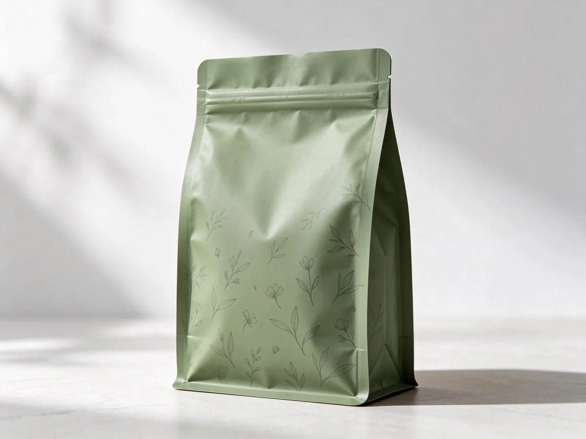

Tea loses aroma, colour and freshness faster than most dry goods. The pouch is chosen against three enemies — oxygen, moisture and light — and the format then follows how you actually pack.

Sample shown for format reference only; any branding on the sample belongs to its respective owner. Production uses your own artwork and specifications.
Tea does not take a degassing valve. Unlike roasted coffee it does not keep releasing carbon dioxide after packing, so the specification goes into oxygen, moisture and light instead — and into the seam and zipper quality that keep those out.
Aroma, colour and freshness disappear through four different routes, and each needs a different part of the structure.
Volatile aromatic compounds migrate through film and out through a poor seal. Aroma retention is a barrier question plus a seal-integrity question, and it is the first thing a buyer notices on opening.
Green and light oolong teas darken and flatten when oxygen reaches the leaf. Residual oxygen at packing matters as much as the film, because a high-barrier bag with poor flushing still oxidises.
Tea is hygroscopic. Moisture uptake dulls the liquor and eventually invites mould. Moisture barrier and a dry packing environment are both part of the specification.
Light bleaches leaf colour and accelerates aroma loss. Opaque foil or metallised structures block it, while a clear window is a display choice that has to be weighed against shelf life.
Indicative starting points. The final call follows net weight, packing method and shelf target.
| Loose leaf retail 100–500 g | Stand-up pouch with high barrier film and zipper, or flat bottom where shelf presence is the priority |
|---|---|
| Premium and gift packs | Flat bottom in matte kraft or foil laminate; the square base and flat panel suit premium presentation |
| Sachets and samples | Small stand-up or flat pouches for trade samples, subscription packs and tasting sets |
| Bulk 1–5 kg | Large stand-up or flat bottom bags, with handles where the pack is carried by hand |
| Outer pouches for bagged tea | Printed outer pouches and carton liners for tea bags, pyramid bags and individually wrapped units |
| Blends and private label | One bag size across a range, with artwork differing per blend; digital printing keeps separate designs in one order |
Selected against the tea type, the shelf life you commit to, and whether the pack must block light.
Tea ranges normally launch as a family — a green, a black, an oolong — rather than a single SKU. Digital printing runs several designs in one order without a cylinder set per design, which suits a new range or a seasonal release. Once one blend repeats at volume, gravure becomes the lower unit cost route and the artwork moves across unchanged.
Five points that decide the barrier, the format and the price.
The points buyers raise most often before a first tea packaging order.
Square base and large print panel for premium retail.
Retail standard with zipper, window and valve options.
The valve question explained, for roasted coffee instead of tea.
Comparing formats by product form and filling method.
What drives the unit price and how to lower it.
Send the tea type, net weight, format and shelf-life target, and we reply from Qingdao within one business day.